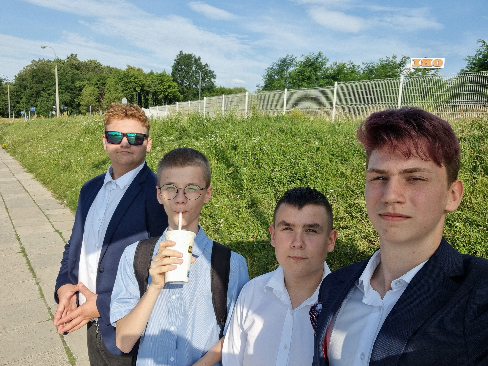
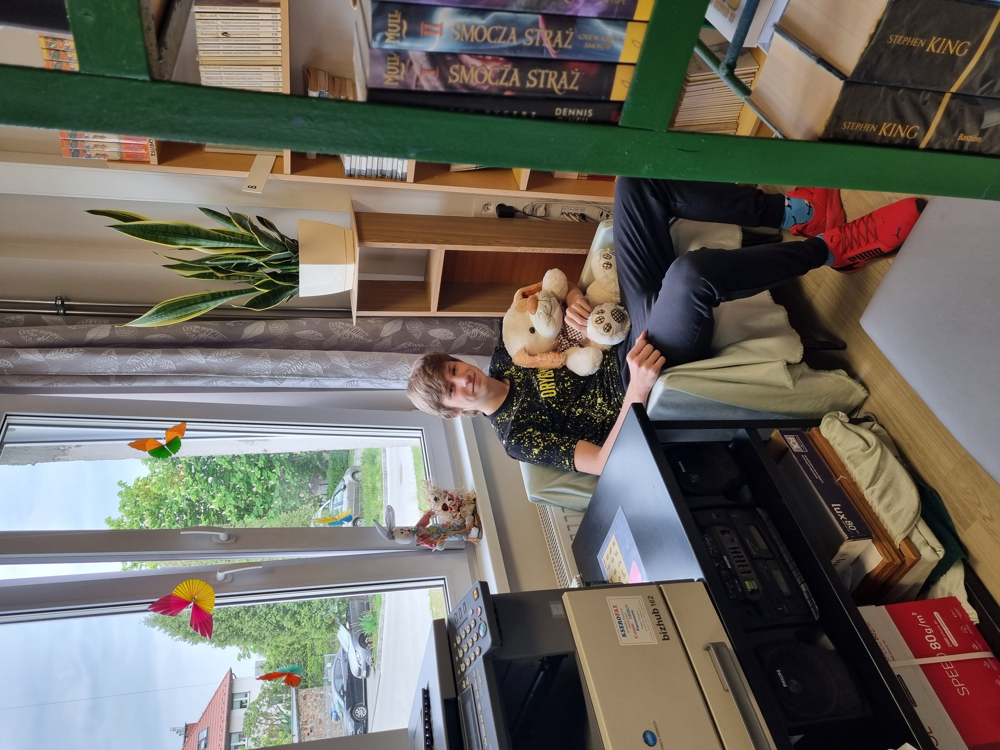
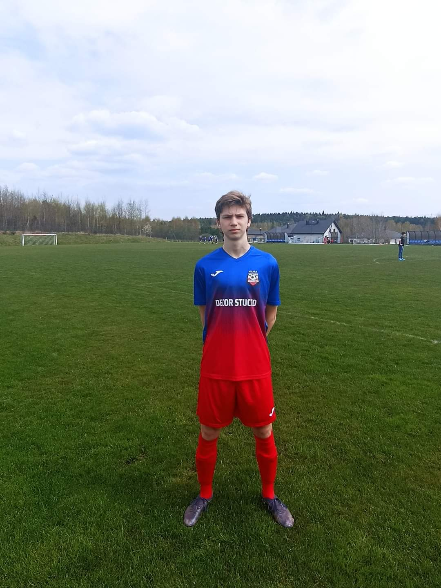

social media


Nazywam się Konstanty Posłowski. Urodziłem się 12 marca 2007 roku i obecnie mam 15 lat. Chodzę do drugiej klasy technikum informatycznego w Kielcach
Jestem blondynem o niebieskich oczach. Ubieram się na sportowo, choć stroje eleganckie nie są mi obce. W mojej szafie przeważają dwa kolory - czarny i biały. Wyglądem staram się choć trochę wyróżniać z tłumu
Nie mogę jednoznacznie określić swojego charakteru, bo tak naprawdę nikt siebie do końca nie zna i trudno się oceniać. Moją zaletą jest kreatywność, co bardzo urozmaica moje życie. Staram się również być uczynny i pomagać innym. Myślę, że można mi zaufać i zwierzyć się z tajemnic. Jestem konsekwentny i uparty w dążeniu do celu. Kiedy na czymś bardzo mi zależy, długo myślę jak to zdobyć, a potem po kolei wszystko realizuję. Staram się nie zrażać błędami, z uśmiechem witać każdy dzień oraz pozytywnie podchodzić do kolejnych wyzwań i doświadczeń. Zawsze staram się myśleć optymistycznie.
Bardzo lubię śmiać się i często to robię. Nie smucę się często, ale gdy mi się to zdarza staram się myśleć o czymś pozytywnym np. słucham muzyki lub rozmawiam z przyjaciółmi. To zawsze poprawia mi humor. Należę do ludzi skrytych w sobie. Jestem zamknięty ale szczery w stosunku do innych ludzi. Nie jestem osobą towarzyską. Myślę, że nie umiałbym przeżyć bez moich przyjaciół czy kolegów. Zawsze możemy porozmawiać, lub powygłupiać się. Przy ludziach, z którymi jestem związany mogę się czuć swobodnie.
Moje zainteresowania są dosyć rozległe. Interesuje się muzyką. Uczę się gry na gitarze. Moją pasją jest też sport, szczególnie piłka nożna. Jak na informatyka przystało gram dużo w gry oraz angażuję się w półprofesjonalny e-sport oraz amatorski streaming. W przyszłości chciałabym dużo podróżować i poznawać inne kultury.
Z moimi zdolnościami jest różnie, ciągle jakieś odkrywam. Moimi ulubionymi przedmiotami w szkole są: Podstawy stron internetowych oraz zajęcia z programowania w języku Python. Moim przyszłym zawodem jest oczywiście praca jako programista, jednak marzę o byciu kierowcą wyścigowym. Inspiruje mnie tworzenie gier w UE4/5 oraz Unity. Chciałbym to robić i w pewnym stopniu związać z tym moją przyszłość.
Jestem, jaki jestem i czuję się dumny z tego, że nie ma takiej drugiej osoby jak ja. Naturalnie są rzeczy, które mogłbym zmienić w swoim charakterze, jak i usposobieniu, lecz nie każdy jest doskonały. Będę zawsze dążyć do celu i wierzę w to, że uda mi się osiągnąć sukces.
PROCESOR: AMD Ryzen 5 3600
KARTA GRAFICZNA: Nvidia RTX 3060TI
RAM: 16GB 3200MHz
PŁYTA GŁÓWNA: ASUS Prime B450
CHŁODZENIE CPU: MSI MAG Core Liquid 240R V2 2x120mm
ZASILACZ: SilentiumPC Vero L3 600W 80 Plus Bronze
OBUDOWA: SilentiumPC Signum SG1V EVO TG ARGB
MIKROFON: SPC GEAR SM950 Czarny
KLAWIATURA: REDRAGON Draconic K530 Biały
MYSZ: Logitech G102
SŁUCHAWKI: SteelSeries Arctis 3 Białe
Na co dzień korzystałem z systemu operacyjnego Windows 10, jednak ostatnio przeżuciłem się na Windows'a 11 i jestem zadowolony.
Jeśli chodzi o program do streamowania to posługuję się dobrze zanym i chwalonym OBS'em.
Do obróbki video na komputerze wykorzystuję płatny program Adobe Premiere Pro w edycji z 2020 roku, natomiast na telefonie nagrania edytuję za pomocą aplikacji CapCut.